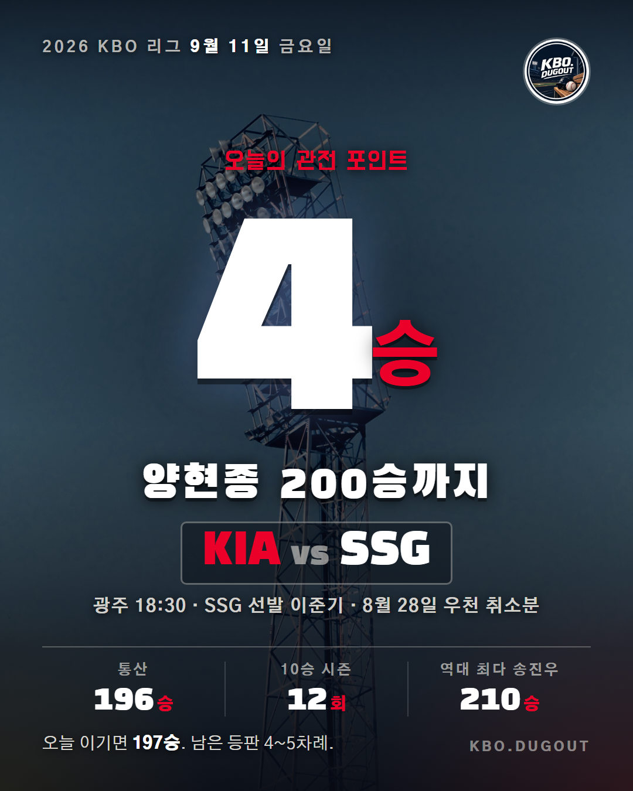
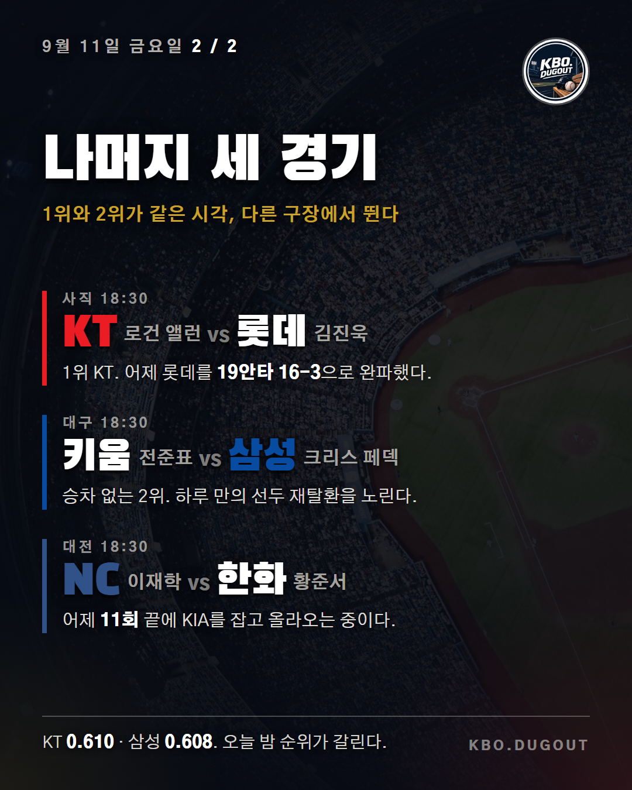

Draft #6


양현종이 오늘 광주에서 SSG를 상대로 선발 등판합니다. 통산 196승, 200승까지 네 번 남았습니다.
지난 5일 KT전에서 시즌 10승과 통산 196승을 한꺼번에 채웠습니다. 통산 열두 번째 10승 시즌으로 이 부문 역대 최다입니다.
KBO에서 200승을 넘긴 투수는 송진우 한 명뿐입니다. 210승. 남은 선발 등판은 네다섯 차례입니다.
같은 시각 사직에서는 1위 KT가, 대구에서는 현재 승차 없는 2위 삼성이 뜁니다.
#KBO #프로야구 #야구 #양현종 #KIA타이거즈
QA 없음
Draft #7


양현종이 오늘 광주에서 SSG를 상대로 선발 등판합니다. 통산 196승, 200승까지 네 번 남았습니다.
지난 5일 KT전에서 5이닝 3실점으로 버티며 시즌 10승과 통산 196승을 한꺼번에 채웠습니다. 2년 만의 10승이었고, 통산 열두 번째 10승 시즌이라 이 부문은 역대 최다가 됐습니다.
KBO에서 200승을 넘긴 투수는 송진우 한 명뿐입니다. 210승. 네 번을 더 이기면 리그 역사에서 두 번째가 됩니다. 남은 선발 등판이 네다섯 차례로 잡혀 있어서 오늘부터는 한 경기도 헐겁게 쓰기 어렵습니다. 오늘 경기 자체가 8월 28일 폭우로 취소됐다가 밀려온 날짜입니다.
같은 시각 1위 싸움도 이어집니다. 어제 롯데를 19안타 16-3으로 완파하고 선두를 되찾은 KT가 승률 0.610, 하루 만에 되찾으려는 삼성이 0.608입니다. 대전에서는 어제 11회 끝에 KIA를 잡은 NC가 한화를 만납니다.
#KBO #프로야구 #야구 #양현종 #KIA타이거즈
QA 없음